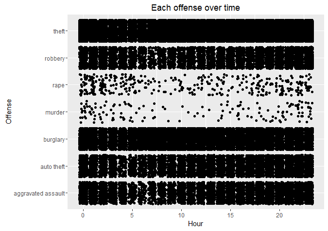

Houston Crime (2010)
I haven't posted in a while. The last few weeks of school and graduation kept me pretty busy. Anyway, I love making maps so I thought playing with ggmap and its Houston crime dataset would be fun. The data is collected from January-August of 2010. I'll see if I can scrape the data from 2004 (the year before hurricane katrina)-present to see how things fluctuate. Anyway, the first thing I looked at was the tally of each crime throughout Houston. You can see the plot below.
As you can see, theft is not-surprisingly the most common crime. I was sort of surprised that aggravated assault was more common than robbery but the difference is tiny. Next thing I looked at was whether the perpetrators acted during any particular hour of the day. You can see that things slow down around the time that people get up and ready for work (5-9 AM ish).
Now to get into the maps. I made a density plot of crime over the city of Houston. GGmap is so nice and easy to use. I will always be grateful for Hadley and his work. Anyway, the light green means a lower frequency of crime in that particular area while red means crime is very frequent there. Hence, we can see that there is some crime before reaching sugarland but the majority of crime is seen in the heart of the city - downtown Houston. This trend sticks even when you take into account the different type of crimes.
Sooo with that in mind, let's look downtown! I decided to forgo a density plot there and just look at the locations of each crime. This was a bad idea because of the theft frequency. It pretty much covered the entire map. So looking for an excuse to examine a subset, I decided to focus on violent crimes (inspired by some Harvard link I came across where they analyzed the data for a mapping tutorial). I looked at robbery, aggravated assault, rape, and murder. Tons of crime is at Midtown where the young professionals stay.
The last thing I looked at were a few case studies-esque things. I found the top 10 locations where crimes happen. They rank (highest to lowest): apartment, residence/house, apartment parking lot, road/street/sidewalk, driveway, department/discount store, other/unknown, restaurant/cafeteria parking lot, commercial parking lot/garage, grocery/supermarket. Out of the 118 locations, these 10 make up 71% of all crime instances. I then made a graph of "crime by location type" for those 10 locations. I also looked up the types of crime that happens at each level of education (elementary vs middle vs high etc). If you have any questions about the data, shoot me an email!
NBA Overtime Games
I was recently curious about how big the home advantage affects overtime games in the NBA. I went to basketball-reference.com and used rvest to scrape some of the data and then cleaned it using stringr, dplyr, and reshape2. I then found the percentage that each team wins in OT games and plotted that. I didn’t merge or delete defunct team since those teams either got relocated (due to low attendance) or revamped which probably played a big part in its success. Thus, there are a number of teams that aren’t established today. I could improve this by penalizing teams who only played in a few OT in comparison to older teams (e.g. Pelicans vs Lakers or Celtics)… I probably will later on. Also, ggrepel is so lovely. Grateful to have something make nice labels for plotting.
I also did a couple classic ‘home vs away’ plots. It shows the per-year percentage of home court victory in OT games. The first one is a GIF while the second is a line. Couldn’t decide which I preferred. Overall, nothing too strange besides the year 1956. Wonder what happened there. Oh yeah, home team won 52.8% of all games from 1949-2015. Might be a tad bit higher if you don’t count 1956. No point in using any tests since this is the full population of NBA OT games.
Fun with Zipcodes Part 2
This is a continuation of the previous post. I took the same ‘majority minority’ zip codes and decided what else I could add. One available dataset I could find was from the IRS. It included the 100 lowest and highest earning zip codes each. I also did some more web scraping and found all the Planned Parenthood locations in America and converted those to lat-long coordinates (messy code means unnecessary for loops and long computation time. I’ll clean it up later). I did this because I’ve frequently heard people mention how they don’t have a problem with Planned Parenthood, but they just don’t like how the organization targets minority communities. I won’t list the statistics or stories I’ve heard because they were never validated but I decided to take primary glance. I looked at the PP locations overlaid on top of the low vs high income zips as well as the ‘minority majority’ zips. The two maps are below

You can see that there is some overlap between PP locations and ‘majority minority’ zips but that’s generally in cities with a huge population so that’s not surprising that they’re there. I’m not here to say ‘Wow, definitely targeting minorities” or not, I’m just here to display the data and let you make your own decision. To further improve this preliminary analysis, I’d probably have to everything withing a certain radius that depends on each state’s density. However, I have no idea what radius to use so this is all that I’m doing for now. Maybe I’ll pick this up later when I show a social scientist or someone who is just more educated about these topics in general haha.
On a another (small) note, I also looked at which zip codes from the 100 lowest income list were in the list of ‘majority minority’ zips and 93 out of the 100 matched. I did the same with the 100 highest income and 3 out of the 100 matched with the ‘majority minority’ zips. Crazy!
Fun with Zipcodes
I was supremely bored during this winter break and decided to have some fun with a little data. I discovered the heaven-sent rvest package created by Hadley Wickham and learned some web scraping. I went to zipatlas.com and was able to find and ordered list of zipcodes with the highest percentage of African-Americans in the US. After some scraping and cleaning, I kept every zip that had at least 25% black and had a population above the median and did the same for zip codes with the highest percentage of Hispanics in the US. I found which zip codes between the two matched and stored those as well as the zip codes that were at least 50% Black or Hispanic so that I had all zip codes that were either 50% Black, Hispanic, or both.
Plotting time! I used ggplot to plot the zipcodes and it looks very pretty to me. Let me know what you think. My next post will explore these zip codes a bit further so be on the lookout!